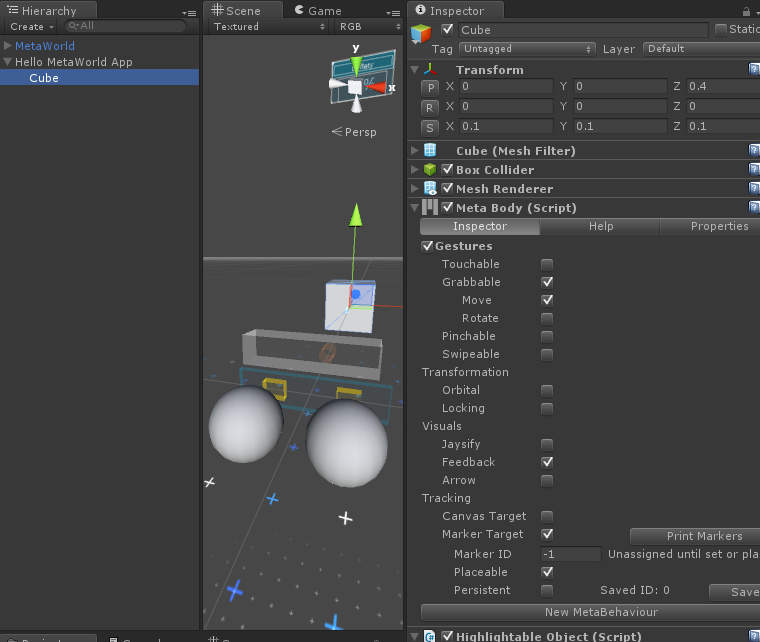

Tracking a MarkerTarget
Overview
This guide will show you how to use the Marker Target option in MetaBody to track GameObjects to a printed marker in the real world.
By the end of this guide, you will be able to:
- Allow an object to be placed on a marker
- Make an object immediately snap to a marker
Requirements
This tutorial also assumes that you have already completed the following:
Steps
Setting up
- Plug in and set up your Meta glasses
- Run Unity
- Open the 'Meta' project
- Open your 'Hello MetaWorld' scene
Printing a marker
- Open the
AprilTagMarkers0-11.pdf file inside your Meta project
Meta\MetaDocs\AprilTagMarkers0-11.pdf
- Print out the marker PDF file
- Place the markers on a surface or object that you want to be tracked
Making a GameObject 'Placeable' on a marker
- Select the 'Cube' from your 'Hello MetaWorld App' GameObject
- Expand the 'Hello MetaWorld App' GameObject in the Hierarchy window by clicking the triangle next to the name
- Select the 'Cube'
- Check the 'Marker Target' and 'Placeable' checkbox and set 'Marker ID' to -1 in the
MetaBody script in the Inspector window

Checking the Marker Target box in MetaBody
- Put on your Meta glasses
- Save the scene
- Turn your head and look at the marker that you printed
- Run the scene by clicking the Play button
The cube and marker in the Game View
- Grab the 'Cube' and move it towards the marker
- Release the 'Cube' and watch it snap to the position of the marker
- Stop the scene by clicking the Play button again
Making a GameObject immediately snap to a marker
- Select the 'Cube' from your 'Hello MetaWorld App' GameObject
- Set 'Marker ID' to the ID of your printed marker (eg. 0) in the
MetaBody script in the Inspector window
- Put on your Meta glasses
- Save the scene
- Turn your head and look at the marker that you printed
- Run the scene by clicking the Play button
- The cube should immediately snap to the position of the marker if it is in view
- Stop the scene by clicking the Play button
Making a GameObject remember its last marker position
- Select the 'Cube' from your 'Hello MetaWorld App' GameObject
- Check the 'Persistent' checkbox in the
MetaBody script in the Inspector window
- Set 'Marker ID' to -1 and click the 'Save' button next to the 'Persistent' checkbox to reset the last remembered marker
- Put on your Meta glasses
- Save the scene
- Turn your head and look at the marker that you printed
- Run the scene by clicking the Play button
- Grab the 'Cube' and move it towards the marker
- Release the 'Cube' and watch it snap to the position of the marker
- Stop the scene by clicking the Play button
- Run the scene by clicking the Play button
- The cube should remember the marker that it was on (the "Saved ID") and immediately snap to its position
Removing Marker Target tracking from a GameObject with MetaBody
- Select the 'Cube' from your 'Hello MetaWorld App' GameObject
- Uncheck the 'Marker Target' checkbox in the
MetaBody script in the Inspector window
- Save the scene
Conclusion
By checking the 'Marker Target' box, the GameObject will stay attached to the marker with the ID specified in the 'Marker ID' box in the MetaBody script. (-1 is the default value, and this will cause it to remain unsnapped until you drag the object near a marker)
Checking 'Placeable' will allow you to switch the marker an object is attached to when it is grabbed/pinched and moved. Checking 'Persistent' will allow you to make a GameObject remember which marker it was last attached to when running the scene.
For further reference on how to use Marker Targets, refer to the MetaBody Component Guide.
The next tutorial will teach you how to add markerless surface tracking functionality to your object with MetaBody.
Next tutorial: Tracking a CanvasTarget
 1.8.8
1.8.8